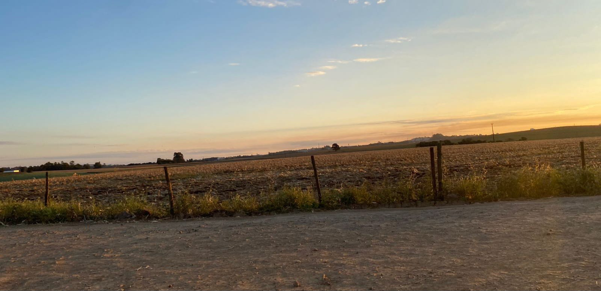

Não existe cidade sem o campo, o campo está ligado a agricultura e pecuária, que são atividades fundamentais na produção de alimento em todo mundo.
A agricultura e a pecuária desempenham papéis na conexão entre o campo e a cidade, garantindo a produção de alimentos frescos e variados para as cidades, sustentando a alimentação das populações e contribuindo com a segurança alimentar.
A gestão de fazendas compreende a organização do plantio e manejo, visando implementar estratégias produtivas, sustentabilidade e estruturação financeira, incluindo um envolvimento detalhado de diversas atividades e áreas distintas da propriedade, sendo um ponto crucial para o sucesso do agronegócio.
O gestor pode implementar diferentes medidas, como a estruturação de processos ou o uso de tecnologias para a automatização de tarefas e aprimoramento do controle das atividades.
Sua administração pode observar desafios a questões operacionais, organizacionais e estratégicas, mas com um gerenciamento estratégico de propriedades rurais, é possível observar inúmeros benefícios financeiros, operacionais e competitivos, contribuindo para o crescimento do negócio e garantindo que produtos de qualidade cheguem aos consumidores finais, estabelecendo a segurança alimentar da população.
Os drones facilitam o trabalho na agricultura, sendo úteis e simplificando diversas tarefas, sua detecção de falhas no plantio ajuda e facilita a tomada de decisão para o replantio da plantação, trazendo ao agricultor maior controle a caso de mudanças necessárias.
Seu uso na irrigação de água nas lavouras, garante que não ocorra a seca nas plantas, durante seu percurso é registrado imagens aéreas que, após processadas por software, fornecem uma contagem precisa de culturas no campo, garantindo a análise a eficiência do plantio e estimação da colheita final de forma mais precisa.
Sem contarmos seu uso na pulverização de defensivos em áreas de difícil acesso ao maquinário que traz a garantia de que não haja perdas. Uma inovação que vem sendo contínua para um futuro sustentável, suas vantagens trazem na agricultura um futuro eficiente e tecnologicamente avançado.
O agroturismo e o turismo rural têm criado destaque como setores de alto potencial de crescimento, oferecendo fontes de renda para comunidades rurais e experiências novas para turistas, combinando turismo com atividades agrícolas e proporcionando uma forma de lazer que conecta as pessoas à natureza.
Propriedades rurais vêm sendo transformadas em opções de hospedagem como pousadas, chalés ou acampamentos, atraindo visitantes que buscam ambientes naturais e tranquilos, trazendo atividades como colheita de frutas, ordenha de vacas, alimentação de animais e passeios a cavalo, que são altamente atrativas para turistas urbanos, trazendo uma conexão mais próxima com a terra e a origem dos alimentos.
A gastronomia rural oferece refeições preparadas com ingredientes frescos e locais, propondo degustações de produtos caseiros como queijos, vinhos e mel. Todas essas práticas de conservação ambiental integradas ao turismo rural atraem ecoturistas interessados em apoiar iniciativas de sustentabilidade agrícola e proteção ambiental, diversificando a renda, promovendo o desenvolvimento econômico das comunidades, preservando a cultura rural e incentivando práticas sustentáveis, proporcionando benefícios e experiências enriquecedoras tanto para os moradores quanto para os visitantes.
A criação de gado apresenta inúmeras oportunidades para produtores e profissionais do setor, sua produção de carne bovina traz uma demanda constante, tanto no mercado interno quanto para exportação, garantindo uma fonte de renda estável. A produção de leite e derivados também é lucrativa, com a crescente demanda por produtos lácteos de alta qualidade e técnicas como inseminação artificial e transferência de embriões, podemos aumentar a eficiência e a produtividade dos rebanhos trazendo um manejo eficiente das pastagens e a nutrição adequada para maximizar a produção.
Os sistemas de pastoreio rotacionado e suplementos alimentares específicos ajudam a melhorar a saúde e o rendimento dos animais junto a tecnologias de pecuária de precisão, como sensores e softwares de gestão, que permitem monitorar a saúde dos rebanhos em tempo real, otimizar o manejo e reduzir custos, alcançando práticas de manejo sustentável e minimizando o impacto ambiental.
A criação de gado oferece oportunidades diversas na produção de carne e leite, melhoria genética, uso de tecnologias avançadas, práticas sustentáveis e acesso a mercados de exportação, sua inovação contínua e a gestão responsável tem trazido oportunidades a toda a população.